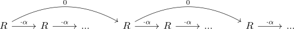
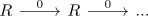

inverting nilpotent element in a ring spectrum
Proposition
Let $R$ be a ring spectrum and $\alpha \in \pi_*(R)$ a nilpotent element. Then $R[\alpha^{-1}]$ is the zero ring spectrum.
Proof
Assume that $\alpha^n = 0$. Then $R[\alpha^{-1}]$ is the filtered colimit ( todo:)

where we may coinitially approxmitae the diagram with

filtered colimit of zero morphisms is the zero object in spectra